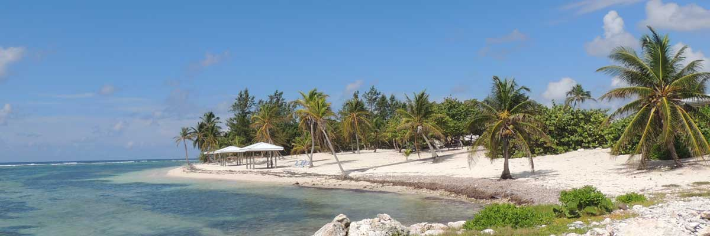

Destinations

Grand Cayman
Grand Cayman Island includes five of the six districts of the Cayman Islands: Bodden Town, East End, George Town, North Side, and West Bay.
- Bodden Town - Founded in the 1700s, Bodden Town district comprises the central part of Grand Cayman Island, between the George Town and North Side districts. The village of Bodden Town was the original capital of the Cayman Islands. Its population is currently listed at 5,764.
- East End - The East End district is located at the east side of Grand Cayman Island and consists mostly of the Village of East End, numerous natural attractions, restaurants, and accommodations. Its population is currently listed at 1,371.
- George Town - The capital of the Cayman Islands and world-famous centre for offshore banking and investments, its population is currently listed at 20,676.
- North Side - Includes Kaibo, Rum Point, and Breakers. Its population is currently listed at 1,079. Sand Point Cove in Rum Point is home to a Bioluminescent Bay or Bio Bay.
- West Bay - Has numerous tourist attractions including the Cayman Turtle Farm and the Cayman Motor Museum. Towns in the West Bay district include Seven Mile Beach, Hell, and West Bay Village. Its population is currently listed at 8,243.
Cayman Brac
Cayman Brac is an island that is part of the Cayman Islands. It lies in the Caribbean Sea about 145 km (90 mi) north-east of Grand Cayman and 8 km (5.0 mi) east of Little Cayman. It is about 19 km (12 mi) long, with an average width of 2 km (1.2 mi). Its terrain is the most prominent of the three Cayman Islands due to "The Bluff", a limestone outcrop that rises steadily along the length of the island up to 43 m (141 ft) above sea level at the eastern end. The island is named after this prominent feature, as "brac" is a Gaelic name for a bluff.
- Diving - There are numerous diving sports on Cayman Brac. Shipwrecks artificial reefs are among the various types. Some of the most popular include Radar Reef, Cemetery Wall, and the Wilderness Wall, all well covered in corals and with a wide diversity of marine life.
- Caves - Caves are found around the island, offering spelunkers a glimpse of delicate underground formations. Steps and, in some cases, ladders have been constructed to allow visitor access to more remote caves. One cave, Rebecca's Cave, contains the grave of a young girl lost in a struggle against the ravages of the great 1932 Cuba hurricane, and it is a Cayman National Heritage Site..
- Rock Climbing - Rock climbing was developed beginning in 1992 and the island is now known as a world-class climbing destination. One must be somewhat experienced to climb here as the terrain is steep, many times over-vertical.
- Walking and Hiking Trails - Walking and hiking trails have been opened by the Nature Tourism Programme which allow exploration of the island's dense Karst forestation. Unique flora and fauna thrive here and can be observed in the wild.
- Fishing - Cayman Brac's waters are especially utilized for both fishing and the pursuit of big game fish.
Little Cayman
Little Cayman is known for its excellent scuba diving and bird watching, unspoiled wildlife habitat and laid-back atmosphere. Despite its small size, the island hosts a heritage festival and parade as part of Pirates Week, the annual Mardi Gras celebration of the Cayman Islands and the Sister Islands Cook-off.
- Little Cayman's Booby Pond Nature Reserve - The largest red-footed booby population in the Caribbean and is a designated Ramsar wetland of international importance. The site encompasses 82 hectares (200 acres). The Cayman Islands National Trust building on one edge of the pond offers viewing decks with telescopes, and the building itself is open for a couple of hours on weekday afternoons.
- Endanagered Species - Little Cayman has the only substantial population (estimated at 1,500) of the critically endangered Lesser Caymans iguana. Little Cayman also hosts the critically endangered hawksbill turtle, and the threatened West Indian whistling duck (Dendrocygna arborea), also known as the black-billed whistling duck. The Tarpon Lake, a salt pond near the center of the island, boasts an unusual population of landlocked tarpon, a large silver fish that usually lives only in the ocean.
- Owen island - A small islet off the south-western coast of Little Cayman. The only way to reach it is by boat, and many visitors make the trip using a kayak or standup paddleboard to cross South Hole Sound Lagoon. The islet features no buildings, homes, or human habitation, making it popular for honeymooners and adventurers.
- Kite Surfing and Kayaking - Southern Cross Club, Sunset Cove and Little Cayman Beach Resort provide kayaks for guests. They will usually rent them to non-guests if they aren't too busy.
- Little Cayman Museum - A small collection focusing on local history is open short hours, usually weekday afternoons.